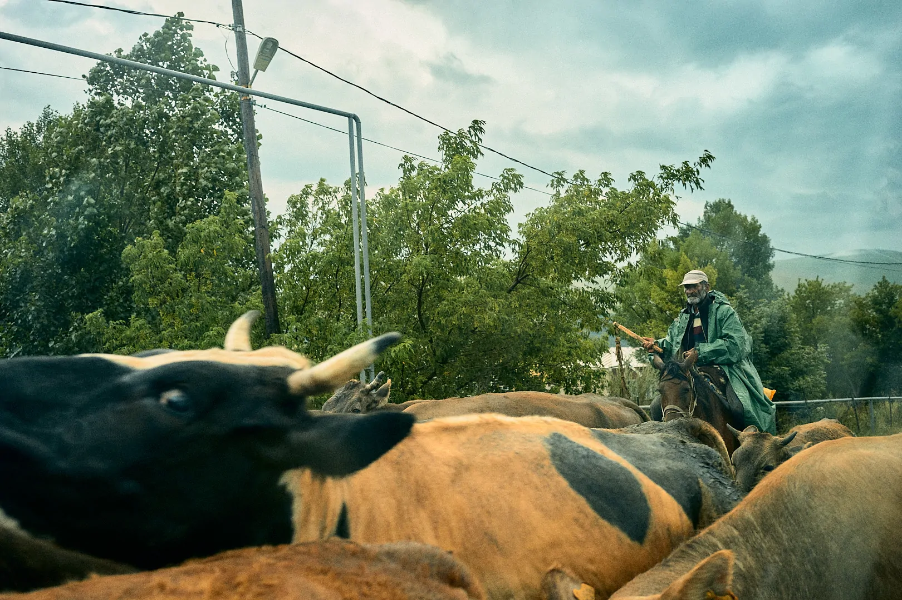
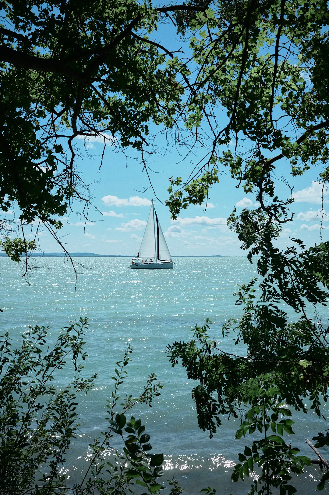
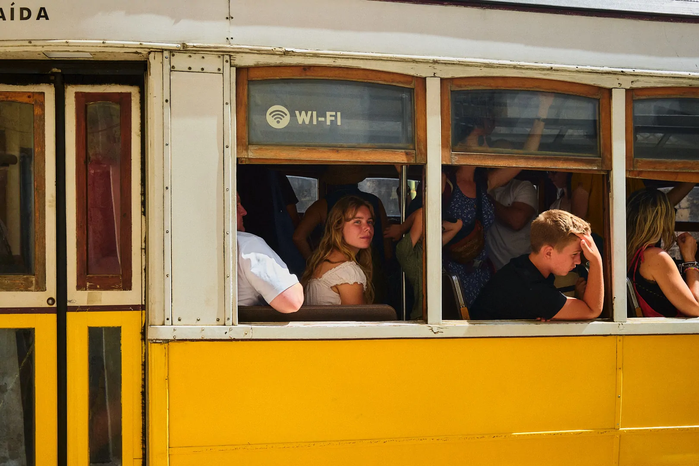
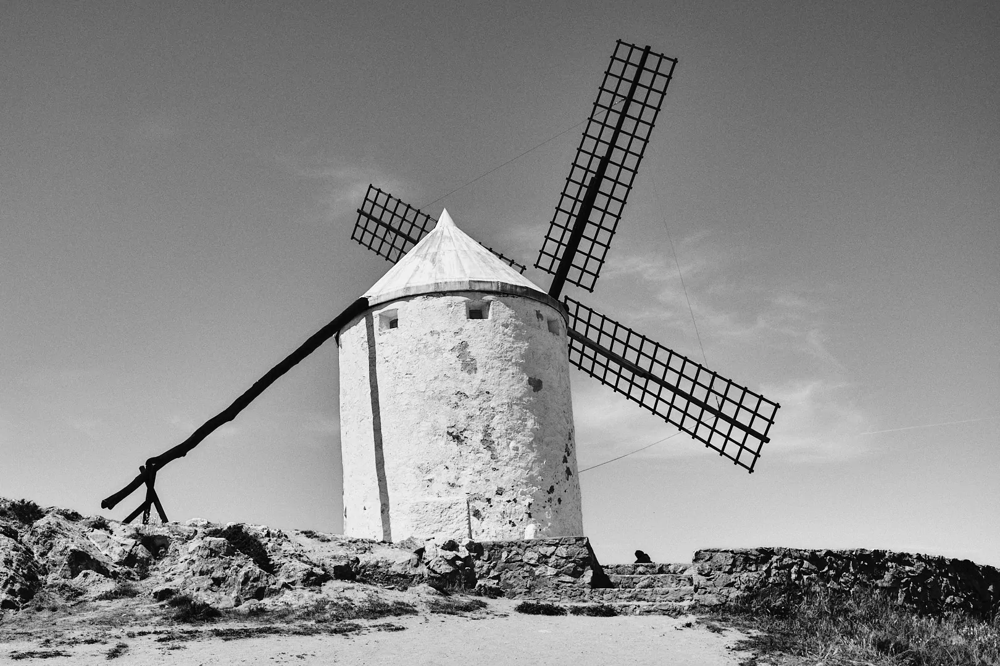
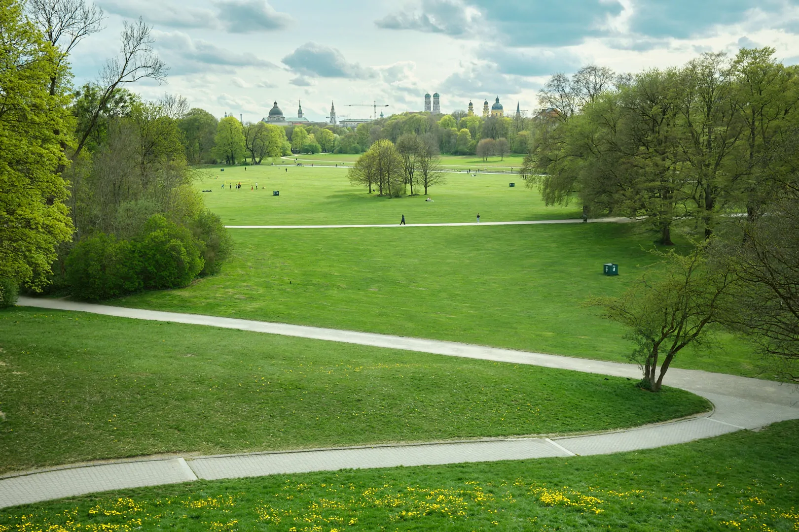
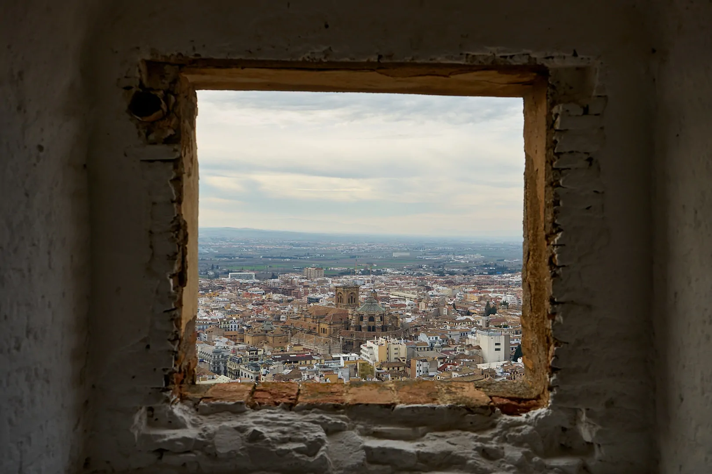

CLAUDIO MURIEL
Travels
Projects
About
The center of the world (2018)

Magyarorszag (2023)

Goshuincho (2024)
Ah, Lisboa! (2025)

¡Gigantes, Sancho! (2023)

Branches of Ink (2022)

Pointing and Shooting Scotland (2022)
Early Works (2012-18)
